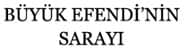

ROBERT WITHERS
Çeviren: Cahit Kayra
Genel Yayın Yönetmeni
Mustafa Karagüllüoğlu
© Yeditepe Yayınevi
T.C. Kültür ve Turizm Bakanlığı
Sertifika No: 16427
ISBN: 978-605-4052-34-9
Yeditepe Yayınevi: 116
Araştırma İnceleme Dizisi: 97
1. Baskı: Mayıs 2010
Sayfa Düzeni
İrfan Güngörür
Kapak Tasarım
Sercan Arslan
Yeditepe Yayınevi
Çatalçeşme Sk. No: 27/15 34410 Cağaloğlu-İstanbul
Tel: (0212) 528 47 53 Faks: (0212) 512 33 78